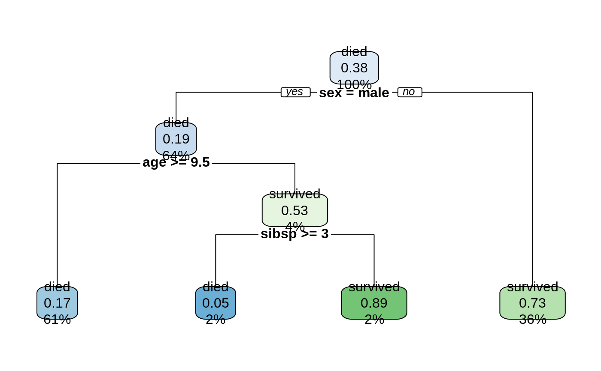

Print an rpart model as a set of rules.
rpart.rules(x = stop("no 'x' argument"),
style = "wide", cover = FALSE, nn = FALSE,
roundint = TRUE, clip.facs = FALSE,
varorder = NULL, ...)
# S3 method for rpart.rules
print(x = stop("no 'x' argument"), style = attr(x, "style"), ...)
Arguments
| x |
An rpart object. The only required argument. |
| style |
One of:
"wide" (default) One rule per line. May require a lot of horizontal space.
"tall" One split per line.
"tallw" Like "tall" but with more horizontal white space for readability.
|
| cover |
Default FALSE.
If TRUE, also print the percentage of cases covered by each rule. |
| nn |
Default FALSE.
If TRUE, also print the leaf node number for each rule. |
| roundint |
If roundint=TRUE (default) and all values of a predictor in the
training data are integers, then splits for that predictor
are rounded to integer.
For example, display nsiblings < 3 instead of nsiblings < 2.5.
Identical to the argument of the same name in rpart.plot, see there for details. |
| clip.facs |
Default FALSE.
If TRUE, print splits on factors as female instead of
sex = female; the variable name and equals is dropped.
Identical to the argument of the same name in rpart.plot. |
| varorder |
By default, the variables in the rules are ordered left to right on
importance, where the ``importance'' of a variable here is the number of rules
it appears in.
Use varorder to force variables to appear first in the rules.
For example varorder="sex" or varorder=c("sex", "pclass")
will put the specified variables first.
Partial matching of variable names is supported. |
| ... |
The following can be passed as dot arguments.
See prp for details on these arguments.
| argument | default | | | | |
extra | = "auto" | | | | a subset of the legal values for prp are supported |
digits | = 2 | | | | default is two digits of accuracy, increase if necessary |
varlen | = 0 | | | | default displays full variable names |
faclen | = 0 | | | | default displays full factor names |
trace | = 0 | | | | |
facsep | = " or " | | | | |
eq | = " is " | | | | |
lt | = " < " | | | | |
ge | = " >= " | | | | |
and | = " & " | | | | |
when | = " when " | | | | |
because | = " because " | | | | used only by rpart.predict |
null.model | = "null model" | | | | for root-only models (no splits) |
response.name | = NULL | | | | the response name printed before the rules (NULL means automatic) |
|
Value
A data.frame of class c("rpart.rules", "data.frame")
with some attached attributes which are passed on to print.rpart.rules.
Note that print.rpart.rules temporarily increases options(width).
See also
Examples

rpart.rules(model)
#> survived
#> 0.05 when sex is male & age < 9.5 & sibsp >= 3
#> 0.17 when sex is male & age >= 9.5
#> 0.73 when sex is female
#> 0.89 when sex is male & age < 9.5 & sibsp < 3